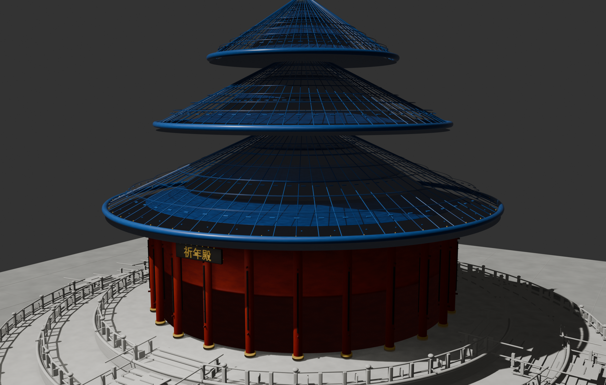
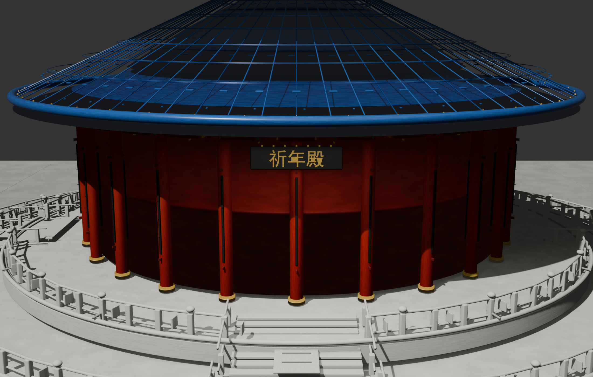
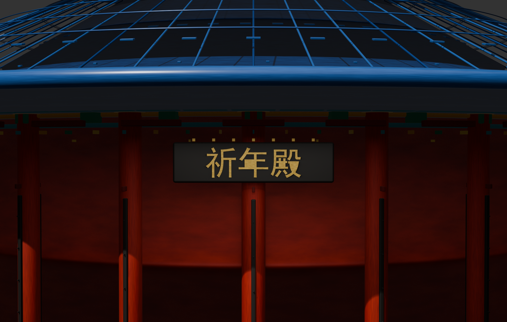

这套流程解决的是：怎样让文字需求真正变成 Blender 模型。
用户只需要说清楚想做什么建筑或空间。系统会先去找资料，再把有用信息整理成资料包，最后写成一份给 Blender skill 执行的“建模说明”。祈年殿这次实验，就是从粗糙轮廓一步步变成可展示模型的完整过程。

从粗糙轮廓到现在，主要变好了哪些地方？
这次不是一次就生成成功，而是每次看结果、指出问题、再把问题变成下一轮建模要求，逐步把模型做细。
最早只是大概拼出“中国地标”的样子，能看出方向，但建筑特征不够真实。
后来只做祈年殿一个建筑，优先保证三重屋顶、红柱、白色台基这些一眼能认出的特征。
继续加入圆形台基、外圈栏杆、格扇门窗、柱脚柱帽、檐下构件和中心牌匾。
给石材、红漆木作、蓝色琉璃瓦、金色线脚和地面铺装加入颜色、粗糙度和细节变化。
发现楼梯和栏杆关系不对后，重新做了栏杆开口、真实踏步、侧边栏杆和中心坡道。


一段文字需求，是怎样变成 3D 模型的？
关键不是让 Blender 直接“猜一个建筑”，而是先把资料找全、整理清楚，再把资料包转换成 Blender skill 能执行的建模说明。
1需求解析：先把一句话变成“任务边界”
用户的原话通常很短，比如“做一个真实风格的祈年殿外观”。系统首先要判断这句话里哪些是必须遵守的边界。
- 输入
- 用户的一段自然语言需求。
- 原理
- 把模糊描述拆成目标对象、生成范围、风格要求和交付方式。
- 输出
- 例如：目标是祈年殿；只做外观；不要室内；风格要偏现实；最终要能展示 3D 模型。
2自动调研：不是随便搜图，而是找“能约束模型”的信息
调研的目的不是堆资料，而是让模型少瞎猜。真正有用的是能影响建模决策的信息。
- 输入
- 目标名称、地点、建筑类型、室内或室外范围。
- 原理
- 优先找官方介绍、百科资料、正面照片、侧面照片、屋顶照片、入口照片、材质和尺寸线索。
- 输出
- 一组参考资料：哪些特征确认可信，哪些只是推测，哪些信息没有找到。
3资料包整理：把资料变成“可建模清单”
找到资料之后，还要把它翻译成 Blender 能用的语言。照片本身不能直接变成模型，必须先变成构件、材质和检查项。
- 输入
- 文字资料、参考图片、用户反馈、前一版模型的问题。
- 原理
- 把资料分成四类：必须出现的特征、建议表现的细节、不能出现的错误、不确定但可合理近似的部分。
- 输出
- 例如：必须有三重蓝瓦屋顶、红柱、白色台基、圆形栏杆、楼梯开口；不能加无关树木。
4提示词生成：把资料包变成 Blender skill 的“施工说明”
这是最关键的一步。Blender skill 真正执行的不是网页上的展示文案，而是一份结构化提示词。它会告诉 skill 按什么顺序建、重点做什么、怎样验收。
- 输入
- 任务边界、资料包、构件清单、材质要求、质量检查项。
- 原理
- 提示词不能只写“真实一点”，而要写成分阶段的建模任务书。
- 输出
- 一份可执行的 Blender 建模说明，交给 skill 生成模型、材质、灯光、相机和导出文件。
给 Blender skill 的提示词，通常要包含这些部分
- 目标说明：这次要生成什么，例如“祈年殿外观，现实风格，只做建筑本体”。
- 资料依据：哪些特征来自参考资料，哪些只是合理推断。
- 必须出现：三重屋顶、圆形台基、红柱、蓝瓦、栏杆、楼梯、牌匾、门窗等。
- 生成顺序：先整体体量，再结构连接，再细节构件，再材质，最后灯光和相机。
- 材质要求：石材要有粗糙度，红柱要像漆木，蓝瓦要有高光，金色线脚要区分出来。
- 禁止事项：不要无关树木，不要漂浮屋顶，不要栏杆穿过楼梯，不要用纯色块冒充真实材质。
- 检查视角：必须输出整体视角、檐口近景、正面近景、楼梯台基近景。
- 交付要求：保存可编辑模型，导出网页可看的模型，并重新打开检查。
为什么提示词这么重要？
因为 Blender skill 更像一个会执行步骤的建模助手，而不是只看一句话就能自动猜对所有细节的魔法按钮。提示词越像“施工说明”，模型就越稳定。
- 太短时
- 只写“生成真实祈年殿”，模型容易只做出大概轮廓，楼梯、栏杆、材质都可能粗糙。
- 结构化后
- 写清楚体量、构件、材质、顺序和检查项，skill 才知道哪里必须细做。
- 本次经验
- 楼梯问题就是靠提示词和质量检查共同修正的：不是说“加楼梯”，而是要求踏步、平台、栏杆开口和台基连接都必须真实存在。
为什么要分成“室外建筑”和“室内空间”两类？
室外和室内需要关注的内容完全不同。用户选择目标类型后，系统会自动切换调研重点、资料包内容和给 Blender skill 的建模说明。
室外建筑模块
- 先确认建筑是谁、长什么样、最有辨识度的外观特征是什么。
- 重点收集外立面、屋顶、入口、台基、门窗、栏杆、牌匾等参考资料。
- 建模时先做整体轮廓，再补屋顶、柱廊、楼梯、栏杆、门窗和细节装饰。
- 材质要能看出石材、木作、金属、瓦面、玻璃或混凝土的差异。
- 检查时既要远看能认出建筑，也要近看楼梯、栏杆、门窗不穿帮。
室内空间模块
- 先确认房间用途、人数、主要活动、动线和需要哪些家具设备。
- 重点收集平面图、室内照片、家具尺度、采光方式和材料搭配。
- 建模时先做地面、墙体、天花和真实门窗洞口，再放家具和灯具。
- 材质要能区分地板、墙漆、木饰面、织物、玻璃、金属和灯光效果。
- 检查时要看空间能不能走通，门窗是不是洞口，家具比例是否合理。
为什么生成完还要检查？
有些模型看起来“有这个东西”，但其实结构关系是错的。比如有楼梯，不代表楼梯真的连上了台基；有栏杆，也不代表栏杆给入口留了开口。
| 检查项 | 室外建筑看什么 | 室内空间看什么 |
|---|---|---|
| 结构是否接上 | 楼梯要接到台基，栏杆要给入口留开口，屋顶和墙体不能像漂浮的片。 | 门要真的通向房间，走道要能走通，家具不能堵住主要路线。 |
| 近景是否可信 | 牌匾、瓦片、柱脚、斗拱、栏杆和踏步要能经得起放大查看。 | 桌椅、灯具、门把手、窗框、踢脚线和插座等细节要完整。 |
| 材质是否像真的 | 石材、木作、瓦面和金属不能只是纯色块，要有粗糙度、纹理和边缘高光。 | 地板、墙面、织物、木纹和玻璃要有不同质感，不能都像塑料。 |
| 是否符合参考 | 地标建筑最核心的轮廓不能错，不确定的尺寸只能作为近似处理。 | 如果有平面图或参考照片，墙体、门窗和房间关系要优先服从资料。 |
| 是否方便交付 | 要能继续编辑，也要能在网页展示台里旋转查看，并提供整体和近景预览。 | 同样需要可编辑模型、网页展示模型和多角度预览，而不是只交一张效果图。 |
经验 1：真实感先来自结构
用户说“真实风格”时，不能只换颜色和灯光。屋顶层级、门窗分隔、台基、楼梯、栏杆和檐下构件都要补上。
经验 2：资料要变成建模要求
调研不是为了堆链接。像祈年殿的三重蓝色琉璃瓦、红柱、白色台基和圆形平面，都要写进建模说明。
经验 3：提示词决定执行质量
给 Blender skill 的提示词不能只写“做真实一点”。它要说明先做整体还是细节、必须表现哪些构件、哪些错误不能出现、最后要看哪些角度。
最后交付的是什么？
最终不是只交一张图片，而是一组可以继续查看、编辑和展示的结果。
网页展示模型：qiniandian_realistic.glb
整体预览：qiniandian_realistic_preview.png
正面近景：qiniandian_front_facade_detail.png
楼梯台基近景：qiniandian_terrace_detail.png
检查报告：glb_validation.json
这套工作流的核心，是把用户的自然语言需求变成一份可靠的建模说明：前面自动调研和资料整理，都是为了让最后交给 Blender skill 的提示词更具体、更有证据、更容易执行。资料包越清楚，提示词越准确，模型就越不容易变成粗糙示意。